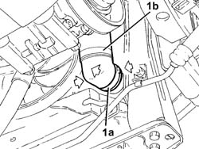
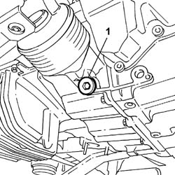
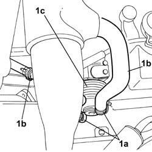
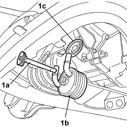
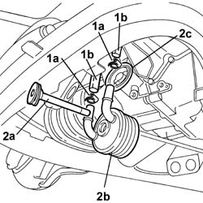

2130A38 Automatic transmission HEAT EXCHANGER - R.R.
- Path
- Procedures > 21 GEARBOX > 2130 AUTOMATIC TRANSMISSION AND DIFFERENTIAL > 2130A AUTOMATIC TRANSMISSION ASSEMBLY > 2130A38 Automatic transmission HEAT EXCHANGER - R.R.
- Kind
- repair procedure (removal / refitting; the operation number is the code)
- Applies to
- engines: 2.4 20V, 3.0 V6, 3.2 V6; all production periods
- Interactive page
- https://sloeber94.github.io/elrnDB-lThss/en/#/190149
Applies to: engines: 3.0 V6, 3.2 V6; all production periods
 Removing
Removing
 Refitting
Refitting- Position the vehicle on a lift.
- Open the boot, remove the cover on the left hand side and disconnect the negative battery lead.
See in Op. 7040D50 ENGINE COMPARTMENT UPPER SOUND INSULATION SHIELD - R.R.
See in Op. 1048A21 AIR INLET HOSE FROM INTAKE TO FILTER - R.R.
See in Op. 1048A28 vacuum air circuit resonator pipe - r+r
See in Op. 1016A42 LEFT CYLINDER HEAD IGNITION COIL COVER - R.R.
See in Op. 1048A11 COMPLETE AIR FILTER -R.R.
- Raise the vehicle on the lift.
See in Op. 7055B54 PROTECTION/GUARD under engine - R.R.
- Position a suitable container for collecting the engine coolant.
1. Open the rapid attachment band (1a) and disconnect the lower pipe (1b) from the radiator.

Applies to: engines: 3.0 V6, 3.2 V6; all production periods
- Position a container to collect the automatic transmission fluid.
1. Undo the plug and drain the transmission fluid.

Applies to: engines: 3.0 V6, 3.2 V6; all production periods
1. Open the bands (1a) for the heat exchanger (1c) coolant inlet and outlet pipes (1b).

Applies to: engines: 3.0 V6, 3.2 V6; all production periods
1. Undo the fixing bolt (1a) and remove the heat exchanger (1b) keeping the seal (1c) that is underneath.

Applies to: engines: 3.0 V6, 3.2 V6; all production periods
Refitting
Removing- Position a new seal and fit the heat exchanger, making sure that the positioning tab is correctly engaged.
- Position a new flexible washer and tighten the bolt fixing the heat exchanger to the recommended torque.
 | Value - daNm | Fastening | Component | Ø |
|---|---|---|---|---|
. | 3.6 | Bolt | HEAD EXCHANGER FIXING BOLTS | M12 X 117 |
See in Op. 7055B54 PROTECTION/GUARD under engine - R.R.
- Lower the vehicle
- Connect the coolant inlet and outlet pipes and close the retaining bands.
See in Op. 0010T44 AUTOMATIC TRANSMISSION FLUID - Change
See in Op. 1048A11 COMPLETE AIR FILTER -R.R.
See in Op. 1016A42 LEFT CYLINDER HEAD IGNITION COIL COVER - R.R.
See in Op. 1048A28 vacuum air circuit resonator pipe - r+r
See in Op. 1048A21 AIR INLET HOSE FROM INTAKE TO FILTER - R.R.
- Connect the negative battery terminal.
See in Op. 0010T21 ENGINE COOLANT - Check density and top up if necessary
-
See in Op. 7040D50 ENGINE COMPARTMENT UPPER SOUND INSULATION SHIELD - R.R.
- Remove the vehicle from the lift.
Applies to: engines: 2.4 20V; all production periods
Removing
Refitting- Position the vehicle on a lift.
- Open the boot, remove the cover on the left hand side and disconnect the negative battery lead.
See in Op. 7040D50 ENGINE COMPARTMENT UPPER SOUND INSULATION SHIELD - R.R.
See in Op. 1016A40 Ignition COIL COVER on cylinder head - R.R.
See in Op. 1048A21 AIR INLET HOSE FROM INTAKE TO FILTER - R.R.
See in Op. 1048A23 Cold AIR INTAKE for air filter - R.R.
See in Op. 1048A28 vacuum air circuit resonator pipe - r+r
See in Op. 1048A10 COMPLETE AIR FILTER -R.R.
- Raise the vehicle on the lift.
See in Op. 7055B54 PROTECTION/GUARD under engine - R.R.
- Position a suitable container for collecting the engine coolant.
1. Open the rapid attachment band (1a) and disconnect the lower pipe (1b) from the radiator.
Applies to: engines: 2.4 20V; all production periods
- Position a container to collect the automatic transmission fluid.
1. Undo the plug and drain the transmission fluid
Applies to: engines: 2.4 20V; all production periods
1. Open the bands (1a) for the coolant inlet and outlet pipes (1b).
2. Undo the hexagonal fixing bolt (2a) and remove the heat exchanger (2b) keeping the seal (2c).

Applies to: engines: 2.4 20V; all production periods
Refitting
Removing- Position a new seal and fit the heat exchanger, making sure that the positioning tab is correctly engaged.
- Position a new flexible washer and tighten the bolt fixing the heat exchanger to the recommended torque.
| Value - daNm | Fastening | Component | Ø |
|---|---|---|---|---|
. | 3.6 | Bolt | GEARBOX OIL HEAT EXCHANGER | M12 |
- Connect the coolant inlet and outlet pipes and close the retaining bands.
See in Op. 0010T44 AUTOMATIC TRANSMISSION FLUID - Change
See in Op. 1048A10 COMPLETE AIR FILTER -R.R.
See in Op. 1048A28 vacuum air circuit resonator pipe - r+r
See in Op. 1048A23 Cold AIR INTAKE for air filter - R.R.
See in Op. 1048A21 AIR INLET HOSE FROM INTAKE TO FILTER - R.R.
See in Op. 1016A40 Ignition COIL COVER on cylinder head - R.R.
See in Op. 7040D50 ENGINE COMPARTMENT UPPER SOUND INSULATION SHIELD - R.R.
- Connect the negative battery terminal.
See in Op. 0010T21 ENGINE COOLANT - Check density and top up if necessary
See in Op. 7055B54 PROTECTION/GUARD under engine - R.R.
- Remove the vehicle from the lift.
Topics linked from this page (11)
- 0010T21 ENGINE COOLANT - Check density and top up if necessary
- 0010T44 AUTOMATIC TRANSMISSION FLUID - Change
- 1016A40 Ignition COIL COVER on cylinder head - R.R.
- 1016A42 LEFT CYLINDER HEAD IGNITION COIL COVER - R.R.
- 1048A10 COMPLETE AIR FILTER -R.R.
- 1048A11 COMPLETE AIR FILTER -R.R.
- 1048A21 AIR INLET HOSE FROM INTAKE TO FILTER - R.R.
- 1048A23 Cold AIR INTAKE for air filter - R.R.
- 1048A28 vacuum air circuit resonator pipe - r+r
- 7040D50 ENGINE COMPARTMENT UPPER SOUND INSULATION SHIELD - R.R.
- 7055B54 PROTECTION/GUARD under engine - R.R.